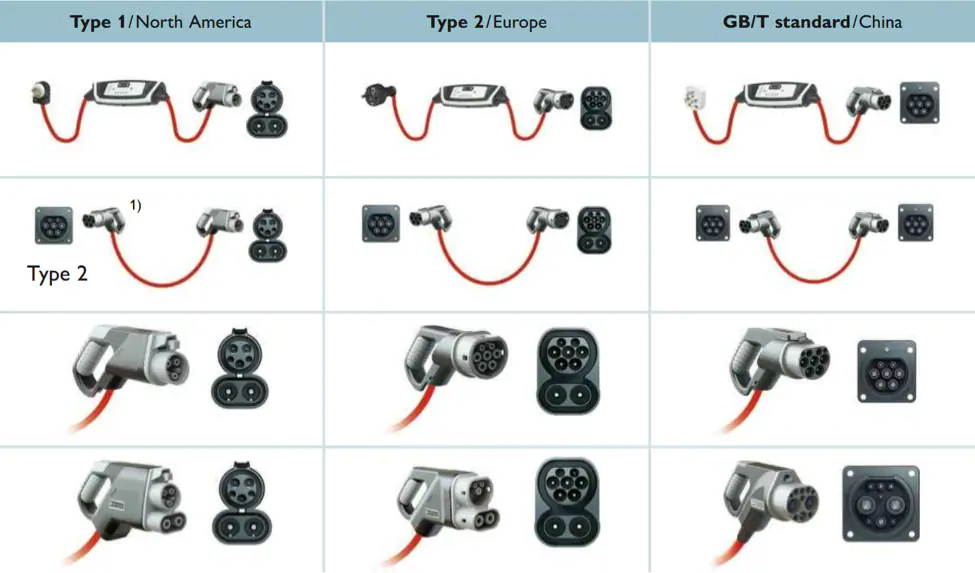
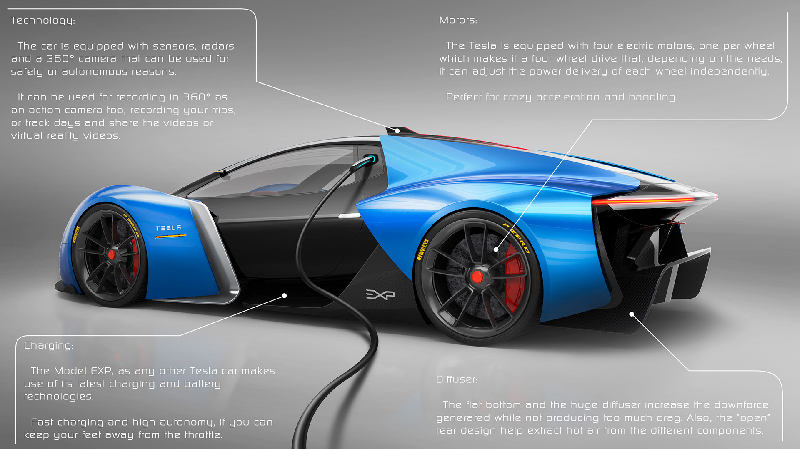
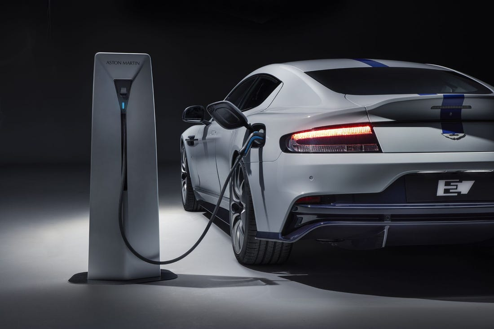

EL CLASSICO AUTOMOBILES
ELECTRIC CARS
An electric car is an automobile that is propelled by one or more
electric motors, using energy stored in rechargeable batteries.
The first practical electric cars were produced in the 1880s. Electric
cars were popular in the late 19th century and early 20th century,
until advances in internal combustion engines, electric starters in
particular, and mass production of cheaper petrol (gasoline) and
diesel vehicles led to a decline in the use of electric drive vehicles.
However, as technology advances, automobile companies have found
efficient ways of producing cars capable of charging at reasonable
hours and the car can last upto a day of driving.
CHARGING, ELECTRICAL USAGE AND INSTALLATION

Yes - they are more expensive to purchase. Electric cars cost more than
conventional, combustion engine vehicles (not for long though), yet the
costs of charging are much lower than of fueling with gasoline. Here's a
short introduction for estimating how much electricity does your EV need,
and how will it affect your wallet. The energy consumption of an EV depends
on the vehicle, driving habits and the weather (just like with any other
vehicle). A large family station wagon consumes much more electricity
than a tiny EV, and commuting at the city center is much more efficient
compared to driving at the highway with full speed. Most electric
vehicles can cover up to 100 kilometres with 15 kWh. Their low energy
loss makes means that they are not very energy intensive. While
petrol or diesel engines convert a maximum of 35 % of this energy
into driving force, an electric car reaches 90 % and more

Changing seasons also have a high impact on the consumption, as the
electricity consumption rises a lot on cold climate. Heating and
cooling decrease the charge of a battery.
setting up a home charging outlet costs around $1,750 for the charging
circuit wiring, and the charging outlet cost can vary from:
Less than $100 for a standard electrical power point
Up to $500 for a basic dedicated EV charging unit
Up to $2,500 for a more advanced dedicated EV charging unit.
The cost of the charging circuit wiring also varies greatly
according to the needs of the household. A licensed electrical
contractor (try Master Electricians) can offer advice on this.
INNER AND OUTER BUILT-IN SPECS
The images below portray how electric cars are manufacures and built.
Keeping in mind that some are highbreed which means they can run both
on electricity and gasoline.


The Biggest Pros and Cons of Electric Vehicles

Electric vehicles (EVs) have made huge technological strides since
they were first introduced, and they’re more popular than ever before.
Yet some drivers are still hesitant to make the switch from traditional
gas-powered cars, in large part due to misconceptions that EVs still
suffer the same shortcomings they did in their earlier years. While
electric cars do, indeed, have their downsides, there are also
considerable benefits to owning one. The benefits of owning an EV
arguably outweigh any cons — from spending less money in the long run
to making fewer trips to the repair shop. And it doesn’t stop there.
PROS
- They’re safe and easy on the environment.
- Electricity is cheaper than gasoline.
- Maintenance is less frequent and less expensive.
- They’re very quiet.
CONS
- Most EVs have pretty short travelling distance.
- Most EVs have pretty short travelling distance.
- They’re a very expensive on initial purchase.
- Charging station availability is inconsistent.
All rights reserved @2020